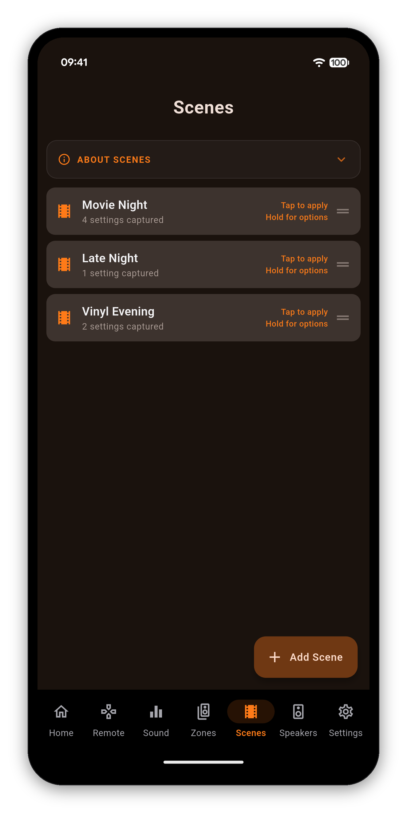
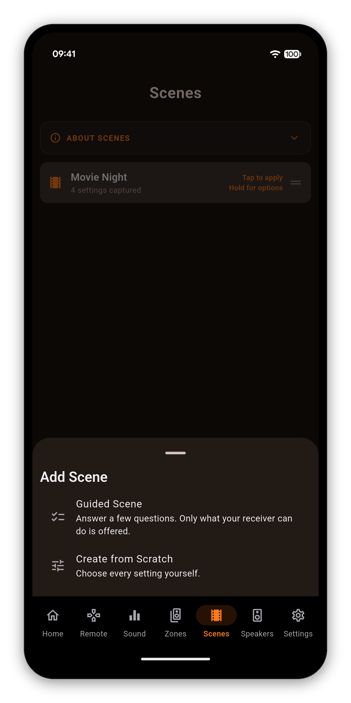
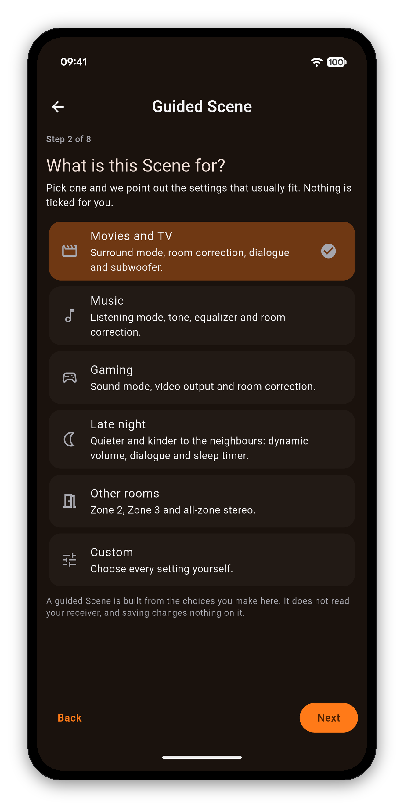
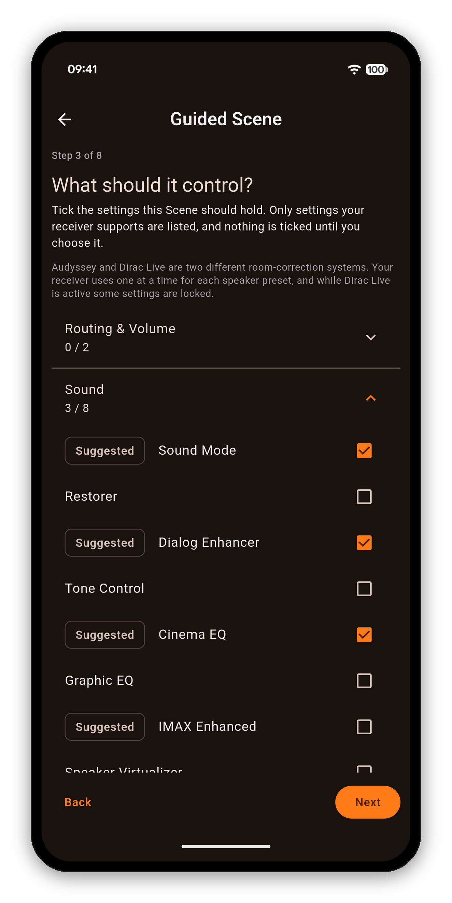
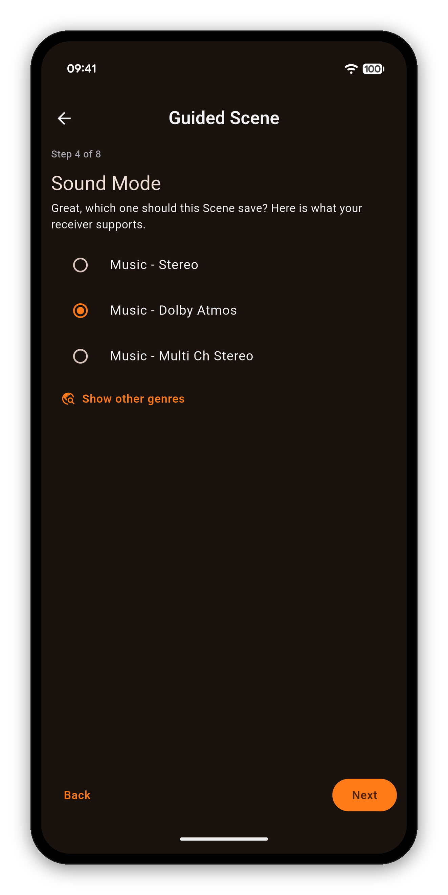
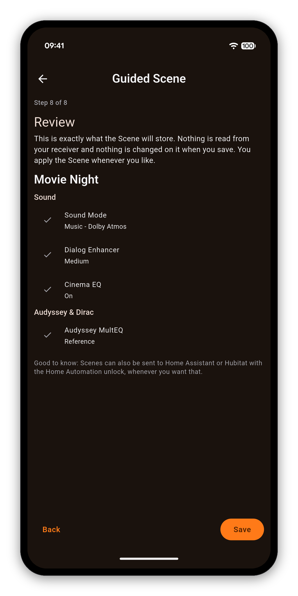
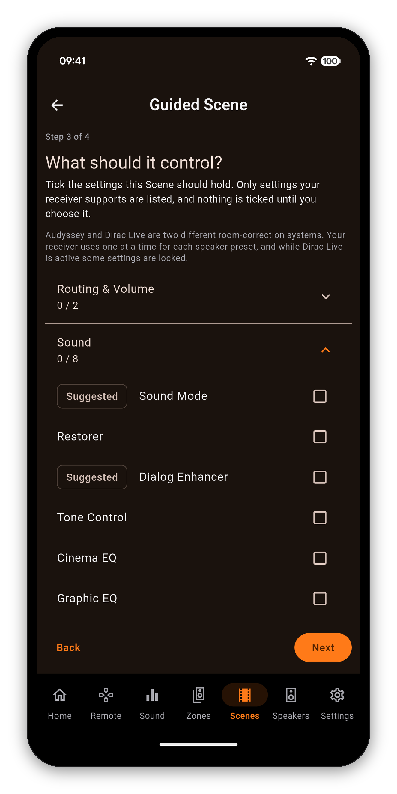
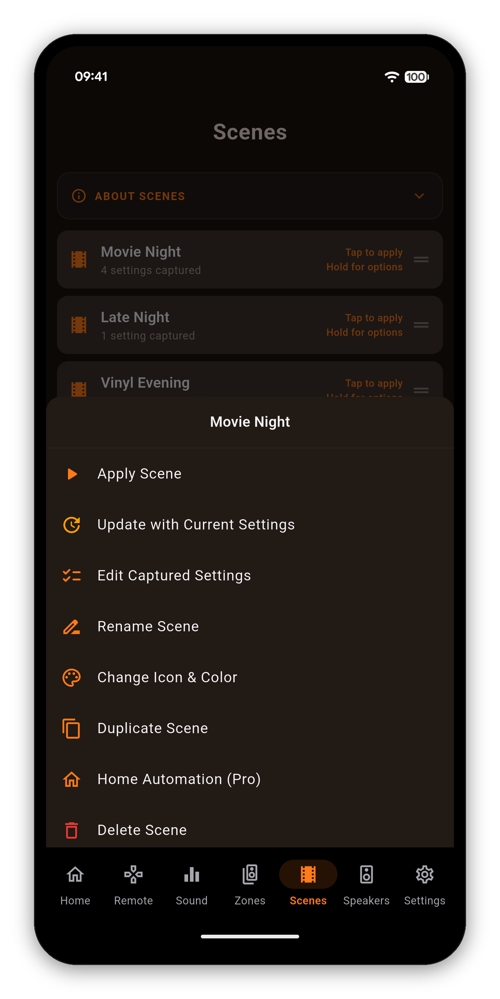
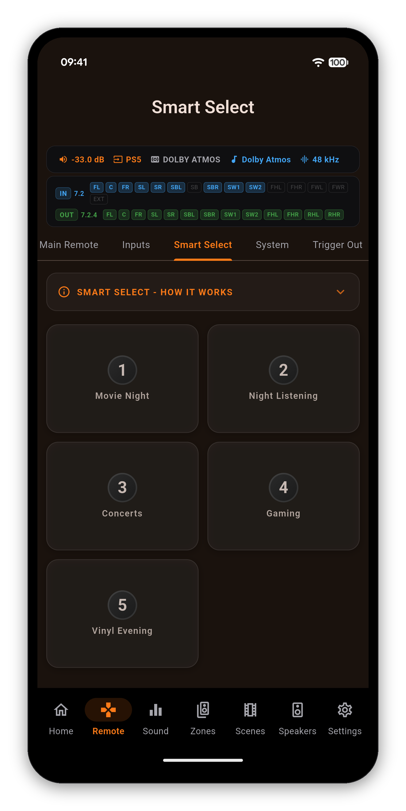

Movie Night, Late Night, Vinyl Evening. Each one is a single tap that sets the input, the sound mode, Audyssey or Dirac, the levels and the zones exactly the way you like them. You do not need to know your receiver's menus to build one: the app asks a few plain questions and only offers what your receiver can actually do.


A guided Scene is built from your answers. It does not read the receiver and saving it changes nothing, so you can try ideas freely. A step counter at the top shows where you are, and Back takes you to any earlier answer.





When the room already sounds right, there is nothing to answer. Tap Add Scene, pick Create from Scratch, give it a name and tick what to keep. The Scene stores the values your receiver has right now, and only those settings.
Picking Custom in a guided Scene gives you the same full list without reading the receiver, which is handy when you are setting up for later.
Applying a Scene changes only the settings it holds. A late-night Scene can turn down the volume and switch on Dynamic Volume while leaving your input, sound mode and calibration exactly where they are.
Main-zone power, input source and master volume. A Scene can switch the receiver on as it loads.
Sound mode, Restorer, Dialog Enhancer, tone, Cinema EQ, Graphic EQ, IMAX Enhanced, speaker virtualizer and center spread.
MultEQ, Dynamic EQ, Dynamic Volume, LFC, and the active Dirac Live slot.
Speaker preset plus per-channel and subwoofer levels.
Zone 2 and Zone 3 power, input and volume, and all-zone stereo.
Eco, sleep timer, dimmer, HDMI audio out, the tuner station, and even the app's own color theme.
Exactly which of these appear depends on your receiver. The app lists only what your model reports, so you never build a Scene around a setting it does not have.

Tap a Scene and its tile shows Applying... while the settings go across, one at a time in a safe order. Long-press it for the rest:

Your receiver also has a few preset slots of its own. Marantz calls them Smart Select and Denon calls them Quick Select, and AVR Maestro uses your receiver's own name on every screen: the Home screen row, the Remote tab, Customize Tabs and the setup guide. A Marantz CINEMA 30 has five of them.
The two never overwrite each other, so use both: the slots for the receiver's own quick switch, Scenes for everything else.
A Scene is not one command. It is a sequence, sent in a deliberate order and paced so the receiver can keep up, which is why it takes a moment rather than happening instantly.
Getting started · Home Screen · Custom Icons · Sound · Graphic EQ · Speakers · Why a control is locked · The Assistant · Home Automation · Home Assistant dashboard · Zones · Remote · Radio (FM/AM) · On-Screen Display · Settings · Languages · Volume Controls · Backup & Restore · Now Playing & HEOS
Scenes, sound modes, Audyssey and Dirac, multi-zone and more - in one fast app. One-time purchase, no ads, no subscriptions.